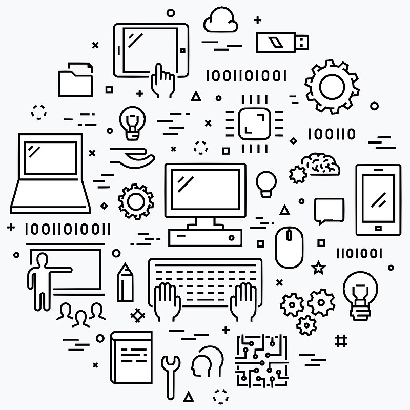

What is Computer Science?
Computer Science is the study of computers and computational systems. It includes both theoretical and practical aspects of computing, including algorithms, programming languages, computer architecture, and more.
Machine Learning
Machine learning is a subfield of computer science that focuses on the development of algorithms that can learn from and make predictions or decisions based on data. Machine learning has numerous applications in fields such as finance, healthcare, and marketing, and has led to the development of technologies such as speech recognition, image and video recognition, and self-driving cars.
Resources
Recommended Books
- The Algorithm Design Manual - S. Skiena (Specifically Chapters: 2, 3, and 4)
- Data Structures, Abstraction and Design using Java Third Edition - Elliot B. Koffman and Paul Wolfgang
- The Nature of Code - D. Shiffman (http://natureofcode.com)
- Learning PHP, MySQL, JavaScript With jQuery, CSS, HTML5, 4th Edition - R. Nixon [Highly Recommended]
- Version Control with Git: Powerful tools and techniques for collaborative software development - J. Loliger